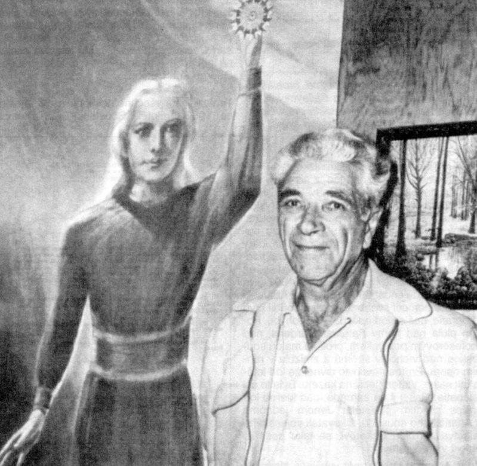

Wojciech Adamski nait à Bydgoszcz (Pologne, alors partie de l'empire germanique) le .
En son père prend le Braunschweig pour New York (USA) où il
arrive le . Le c'est le reste de la famille qui prend le Halle
à Brême (Allemagne) pour New York. Ils s'installe dans le quartier polonais de
Dunkirk (New York), où il grandit.
En "George" travaille déjà comme charbonnier, comme son père. En , il s'engage,
affecté dans le 13ème régiment de cavalerie près de la frontière mexicaine. En , il épouse Mary A.
Shimesky, et est démobilisé en .
Religion
En , il fonde à Laguna Beach (Californie) un Ordre Royal du
Tibet, prétendant avoir reçu pendant plusieurs années 3 à 4 ans selon Henry Dohan: The Pawn of His Creator, p.35 ou 6 ans selon Fred Steckling (ancien président de la GAF), Cosmic Bulletin, 1979-06, p. 6.
un enseignement dans une lamaserie, le tout financé par un couple mystérieux lors de sa jeunesse :
J'ai appris de grandes vérités là-bas sur le toit du monde, ou plutôt l'enseignement d'appliquer les
connaissances ancestrales à la vie de tous les jours, pour soigner le corps et l'esprit et pour gagner la maîtrise
de soi et de son âme Los Angeles Times,
En il part avec quelques-uns de ses disciples à Valley Center, où ils
créent une sorte de petite exploitation agricole. En , ils partent sur les pentes méridionales du
Mont Palomar (Californie) : à côté du plus grand télescope du monde, il passe beaucoup de
temps en astronome amateur à étudier le ciel à l'aide d'un réflecteur de 6 pouces.
En sa mère meurt "Entered Into Rest", Evening
Observer de Dunkirk (New York), 26 octobre 1946 et Adamski va développer une passion pour la vie
extraterrestre et les soucoupes volantes : le
, alors qu'il observe une pluie de météores avec son télescope 6", il dit avoir observé un
objet en forme de cigare . Il publie un traité de 10 pages sur la possibilité de vie sur d'autres planètesAdamski, G.: "The
possibility of Life On Other Planets", 1946.
Premières photos
En il présente une première photo d'ovni. En il sort un livre de
science-fiction sur un voyage vers la
Lune,
Mars et VénusAdamski, G. (en fait écrit par Lucy McGinnis): Pioneers of Space, 1949 - disponible à la Bibliothèque du Congrès, sous forme de microfilm.
À la fin de l'année il reçoit la visite de J. P. Maxfield et G. L. Bloom du Laboratoire d'Electronique de la
Marine de Point Loma près de San Diego, qui lui assurèrent que les
soucoupes volantes sont probablement interplanétaires, parce
qu'aucun gouvernement de la Terre ne les fabrique. Ils demandent aussi sa coopération pour essayer d'obtenir des
photographies de ces appareils étranges, en supposant que le télescope de 6" d'Adamski
pourrait manoeuvrer plus facilement que les grandes télescopes de l'Observatoire ; ils dirent à
Adamski qu'ils prévoyaient de faire une demande semblable de photographies à
l'Observatoire lui-même Moseley, J.: "Some New Facts About "Flying Saucers Have Landed", Nexus n° 7
.
Le , il passe de la fiction au témoignage,
en racontant avoir vu des escadres dans son télescope :
Alors que j'observais la Lune avec mon télescope 6
pouces je remarquais plusieurs points lumineux minuscules s'élevant apparemment de la surface de la
Lune. J'avais observé cet astre durant de si longs
moments au cours des 20 dernières années mais je n'avais jamais rien vu comme ceux-là. J'attachais rapidement
l'appareil photo et pris cette photo. Qu'ils aient été à
la surface de la Lune ou stationnés loin d'elle dans
l'espace je ne saurais le dire. Tout ce que je sais est que les corps célestes naturels ne s'arrêtent pas, ni ne
démarrent et changent de direction selon leur propre volonté. Je pense que des voyageurs interplanétaires
pourraient utiliser notre satellite comme une base de temps à autre.
A cette époque Adamski est visité par les Lorenzen qui gèrent l'APRO et vivent
alors à Los Angeles. Ceux-ci le trouvent très agréable mais ne lui accordent pas grande
crédibilité : Une fois, il a parlé
plusieurs fois de la Lune comme une planète,
se souvient Coral E. Lorenzen.
En il présente une série de 4 autres photos, qu'il aurait prises le ,
avec son télescope 6 pouces. Adamski les présente comme des soucoupes sortant d'un "vaisseau-mère" : sur la
première 1 seule soucoupe est visible, et sur chaque image successive plus de soucoupes ont quitté le
vaisseau-mère, jusqu'à 6 soucoupes sur la dernière photo (ci-contre).
1er contact
Diagramme de la structure interne d'un "vaisseau mère" vénusien selon Adamski Dessin de Glenn Passmore, 1952
Par la suite, Adamski affirme avoir été contacté par des extraterrestres : le , il aurait
installé son télescope dans un endroit favorable au passage des soucoupes volantes, au centre du désert de
Californie et aurait attendu, avec 6 autres personnes : George Hunt Williamson et sa
femme Betty, une connaissance nommée Al Bailey et sa femme, Lucy McGiness la secrétaire d'Adamski, et Alice K.
Wells, la propriétaire du Palomar Gardens Cafe.
Très vite, un engin mystérieux aurait atterri. Un être de taille humaine, 1,70 m, se serait alors approché de
lui, portant une sorte de combinaison de ski, des cheveux longs et blonds.
Adamski raconte :
Lorsque je me suis approché de lui j'ai ressenti une étrange sensation et je suis resté sur mes gardes. A ce
moment j'ai jetté un oeil pour me rassurer et être sûr que nous étions tous les deux visibles de mes compagnons.
Apparemment il n'y avait aucune raison de ressentir cette sensation, l'homme ressemblait à tout autre homme, et
j'ai remarqué qu'il était relativement plus petit que moi et considérablement plus jeune.
Soudain, comme si un voile était ôté de mon esprit, le sentiment de prudence m'a quitté si totalement que je
n'ai plus eu conscience de la présence de mes amis... A ce moment nous étions vraiment proches. Il fit 4 pas
vers moi, nous amenant chacun dans les bras de l'autre.
Alors pour la première fois j'ai vraiment réalisé que j'étais en présence d'un homme de l'espace — un
humain d'un autre monde ! La beauté de son apparence dépassait tout ce que j'avais pu voir. Et l'aspect
avenant de son visage me libéra de toute pensée personnelle. Je me sentais comme un petit enfant en présence de
quelqu'un doté d'une grande intelligence et de beaucoup d'amour, et je devint très humble par rapport à
moi-même... de lui émanait le sentiment d'une compréhension et d'une gentillesse infinie, avec une humilité
absolue.
Il me fit comprendre qu'ils venaient en paix. Aussi, comme il le mima, qu'ils étaient préoccupés des radiations
partant de la terre. Je lui demandais si cette préoccupation était due aux explosions de nos bombes et leurs
vastes nuages radio-actifs ? Il compris cela rapidement et hocha la tête de manière affirmative
op. cit..
Pied gauche Pied droit
Heureusement, Adamski et son équipe ont opportunément emené du platre dans leur voiture, et ils s'empressent de
faire un moulage des empreintes de pas du vénusien Orthon. On remarquera la forme de svastika (croix gammée) sur
l'avant de empreinte droite, non sans rappeler les sombres fréquentations d'Adamski (Dudley Pelley, Ballard,
Williamson) de l'époque.
Une des photos qu'Adamski aurait prise le à Palomar Gardens (Californie)
à travers un télescope de 6 pouces
Ce n'était qu'une 1ère rencontre. Le 13 décembre à Palomar Gardens (Californie),
Adamski aurait fait une photo de leur soucoupe, restée célèbre. Elle sera par la suite démontée comme celle d'une
maquette constituée notamment d'une partie de lampe
Carpenter, Joel: "Preliminary
Notes on the Adamski Scout Ship Photos", 2 avril 2012.
Le "vénusien" serait revenu et, pour faire plaisir à l'écrivain, lui aurait fait faire une voyage express autour
de la Lune, pour lui montrer des rivières et des lacs sur la face cachée Blodget, Charlotte: Inside
the Space Ships, 1955 - D'après les propos d'Adamski. Récit de sa visite d'ovnis en provenance de Saturne et Vénus. Ramu de Saturne y regrette d'avoir entraîné l'accident de Mantell. Traduit A
bord des soucoupes volantes.
En raison de la promesse du visiteur de me retourner ma plaque (de film photographique), je restais dans un
état d'alerte constant.
(...) Je pus l'observer planer silencieusement dans ma direction - un appareil iridescent semblant fait de
verre émettant ses brillantes couleurs dans le soleil du matin !
Je vis le support tomber (...) ma seule pensée était maintenant d'aller chez le photographe pour voir ce que
j'avais pu réussir à capturer (...) une fois (la photo) développée, et avec les témoins présents, et qu'une
épreuve fut tirée, il n'y avait plus trace de la photo d'origine - que je pris avant que le visiteur prenne le
support - totalement effacée; et elle était remplacée par un étrange photographie et un message symbolique... .
Suite à ce premier contact avec ceux qu'il appele des Vénusiens, Adamski commence à dispenser sa bonne parole de
la "Philosophie Cosmique". En , il écrit un livre avec Desmond LeslieAdamski, G. & Leslie, Desmond: Flying Saucers Have Landed, 1953, traduit Les soucoupes volantes ont atterri.
On y retrouve des similarités avec son 1er livre de SF. Il y raconte ses rencontres, et cite des extraits du livre
Les stances de Dyzan, décrit comme provenant de la planète
Vénus et apporté aux Indes, pourtant réputé disparu :
Mais la vie avait besoin d'une intelligence pour embrasser l'univers. Nous ne pouvons la lui donner, dirent les
ancêtres. Je ne l'ai jamais eue, dit l'esprit de la Terre. L'homme n'était qu'un bhuta vide et sans esprit (...)
Ainsi, Venus envoya le plus grand de la planète, le "Sanat
Kumara", le "Seigneur de la Flamme", qui descendit sur la Terre avec ses 4 grands maîtres et 100 assistants
Adamski 1953.
Le livre connaît un succès immédiat, étouffant les premières critiques.
James Moseley se souvient de la visite qu'il lui rendit cette année-là :
Quand je l'ai rencontré, Adamski était en mode gourou. Vous pouviez aller le voir à Palomar sans rendez-vous et
il était assis là, présidant, et parlant à tous ceux qui étaient venus. Il avait l'air d'un type agréable. Il ne
pouvait rien prouver ; c'était à vous de le croire ou non. Maintenant, qu'il ait été authentique ou non, il
avait bel et bien été de l'Ordre Royal du Tibet (...)
Je pense que c'est une des choses-clés du mouvement des contactés : ils
croyaient à ce qu'ils disaient, mais avaient besoin d'une plus haute autorité pour être entendus. Comme dans une
religion, où il vous faut Dieu. Adamski avait besoin d'Orthon
Redfern, Nick: "Jim Moseley: “Adamski Needed Orthon”", Mysterious Universe, 2016-12-15.
Adamski fera ainsi un grand tort à une étude sérieuse des ovnis, de nombreux chercheurs se mettant alors à douter
à priori de ses témoignages. On lui doit plusieurs documents à l'authenticité sérieusement remise en cause. Ceci
d'autant plus que les canulars et mystifications se
succéderont à un rythme au moins aussi rapide que les authentiques apparitions d'ovnis. Le combat en particulier
Donald E. Keyhoe qui le qualifiera d'employé d'un stand de hamburger alors que
la presse donne à Adamski le titre d'"astronome" parce qu'il vit dans une maison sur le Mont Palomar, à côté d'un
grand télescope en fonctionnement.
Faux documents
Le , Adamski donne une conférence au Lions Club Californien, commençant par prétendre
que ce qu'il va dire a été validé avec le FBI et le Renseignement de
l'USAF, ce qui n'échappe pas au bureau du FBI de
San Diego.
La réaction ne se fait pas attendre et, à partir du , des représentants du
FBI comme de l'USAF, Absolument certains qu'aucune
validation d'aucune sorte n'a été donnée à Adamski, lui rendent visite à son Palomar Gardens Cafe, et le
réprimandent sévèrement pour avoir déclaré que ce qu'il disait avait reçu la bénédiction du
FBI et de l'USAF.
Adamski, bien que niant alors l'avoir prétendu, reçoit alors l'ordre de signer un document officiel, adressé au
FBI et à l'USAF, confirmant que ses déclarations et ses documents ne bénéficient d'aucun soutien ou validation
officiels d'aucune sorte. Une copie est laissée à Adamski, d'autres allant au QG et aux bureaux du FBI de
Dallas, Los Angeles et Cleveland, ces bureaux ayant reçu antérieurement des communications concernant
[Adamski].
Adamski racontera :
J'ai reçu la visite de 3 hommes... qui m'ont
directement menacé, demandant certains papiers que j'avais, pour commencer. Je leur en donnais certains, et on
me promit de me les rendre, mais la promesse ne fut jamais tenue... Je ne lui avait pas donné des papiers qui
étaient importants. Je ne vais pas nier que j'avais peur. Avant qu'ils partent il me dirent d'arrêter de
parler oui qu'ils me retrouveraient, m'enfermeraient et jeteraient la clé Keith: Casebook, pp. 113-14 < Medway, Gareth J.: "Men
in Black Encounters, a Short Catalogue", Magonia.
Des années plus tard, en , il reçoit une
lettre écrite sur du papier du Département d'Etat, avec un tampon du département et un cachet de la poste
indiquant Washington (D.C.). Signée R. E. Straith, Comité des Echanges Culturels, elle indique : Le
Département dispose dans ses archives de nombreux éléments confirmant vos déclarations (...) Bien que
le Département ne puisse certainement pas confirmer publiquement ce que vous avez vécu, il peut, je pense,
décemment, encourager votre travail.
La lettre galvanise les adeptes d'Adamski. Ils accusent le Département de cacher la vérité, ce que ce dernier
conteste, répétant ne rien savoir d'un supposé R. E. Straith ni d'un Comité d'Echanges Culturels.
Jamais aucun Straith ne peut être retrouvé, en dépit des efforts des partisans d'Adamski. Ils en concluent alors
que ce comité doit être classé trop secret pour que le gouvernement puisse admettre son existence.
Des ufologues doutant des d'Adamski sont, quant à eux, convaincus que la lettre est un faux rédigé, comme le
suspecte Lonzo Dove, sur la machine à écrire de
Gray Barker. James Moseley
refuse un article de Dove sur le sujet, avant d'admettre après la mort de Barker en avoir
effectivement été l'auteur de la lettre avec ce dernier (le papier à en-tête ayant été fourni par un ami de
Barker ayant un parent relativement haut placé).
De , Adamski va porter sa parole hors des frontières, et est même reçu par la Reine Juliana
de Hollande en .
 Adamski posant à côté d'une
illustration de son émissaire Vénusien
Visite au Pape
Le , Adamski rencontre le Pape Jean 23. Sur la place Saint Pierre à Rome (Italie),
Adamski demande à ses 2 amies May Morlet et Lou Zinsstag de rester là et de
l'attendre. Il traverse alors la foule des touristes et disparaît derrière une porte éloignée. Quelques
plus tard, il réapparaît et raconte aux 2 femmes avoir vu Jean 23 qui était malade, très
certainement, mais avait un teint rosé, et non olivâtre qu'on les gens atteints de cancer lorsqu'ils sont à
l'agonie. Il dit aussi avoir vu la fameux jardins du Vatican au travers des fenêtres de la chambre papale (il
racontera la même histoire au docteur Perego, alors que la chambre papale fait face à la place Saint Pierre, à
l'opposé des jardins). 3 jours plus tard meurt Jean 23. Adamski est revenu avec une "Médaille Dorée d'Honneur" de
la part du pape, qui serait, d'après un numismate romain, en fait un souvenir pour touriste produit par une
société de Milan Hallet.
Plus tard, Adamski confessera que 4 savants du gouvernement américain étaient à l'origine du lancement de sa
carrière d'ambassadeur des Frères de l'Espace. Ces savants appartenaient au laboratoire d'électronique navale
de Point Loma, près de San Diego, et à une organisation similaire de Pasadena.
Ceux-ci lui auraient demandé s'il voulait bien coopérer à une tentative collective de prendre des photos des
étranges engins se déplaçant dans l'espace.
Adamski indiqua à propos des "foo-fighters" que ces
boules de feu avaient pour objectif d'annihiler les effets désastreux des radiations atomiques.
Le film d'Adamski en 1965
En , Adamski présente un film 8 mm pris avec Madelaine Rodeffer montrant un vaisseau vénusien en
vol. Le , il meurt d'une attaque cardiaque à
Silver Springs (Maryland). Il est enterré dans le cimetière d'Arlington. Cette année-là
est fondée la Fondation Adamski, dont le l'objectif déclaré est de promouvoir
les faits scientifiques et la pensée philosophique pertinents pour comprendre que la vie humaine est la règle, et
non l'exception, dans l'univers.
Auteur de :
Cosmic philosophy, 1961
Flying Saucer Farewell, Londres: Abelard-Schuman, 1961 ; réédité Behind the flying saucer
mystery, New York: Abelard, 1961. OCLC 964949, 4020003, 2903347 (édition de poche).
Telepathy - The cosmic or universal language
Références :
Hallet, Marc:George Adamski, Michel Moutet, Regusse, France, 1983.
Hallet, M.: Les sectaires d'Adamski, à compte d'auteur, Liège,
Belgique, 1984 et 1988
Hallet, M.: George Adamski - Dernière synthèse, Edition privée, Liège, Belgique, 1994
Evans, Hilary & Stacy, Dennis: Le chapitre Adamski and
his believers dans UFO 1947-1997, J. Brown Publ., Londres, 1997
Hallet, M.: Biographie d'un escroc, Edition privée, Liège, Belgique, 2000